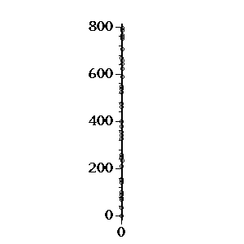
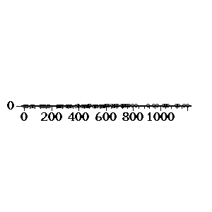
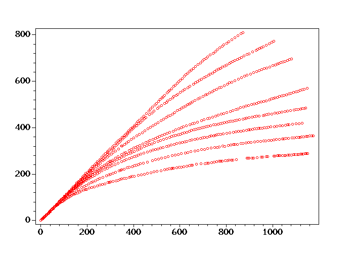

| coord-trans - 坐标变换 |
coord-trans - 坐标变换
Agent Zhang (章亦春) <agent2002@126.com>
Create: 2005-01-05
Last Update: 2005-01-07
本文档将对来自扫描图片的原始象素坐标进行变换，以便得到图纸上的理论坐标。我们 利用 GetPoint 软件的 GUI 界面已得到了几组包含有象素坐标列表的 YAML 数据文 件。
我们首期望得到有关坐标系本身的信息。事实上这儿有两个坐标系，一是象素坐标系， 一是理论坐标系。YAML 文件中的坐标是象素坐标，我们希望找到一个转换函数，可 以实现从象素坐标到理论坐标的变换。
由于 GetPoint 设计上的失误，其导出的 YAML 文件中点的坐标表示成了字符串 的形式，即横坐标与纵坐标以空格分隔的字符串。这使得我们在对坐标进行操作的 时候很不方便，因此我编写了下面的 Perl 校正函数，用来校正从 YAML 读出的 groups 数据结构：
Perl
sub adjust_groups {
my $groups = shift;
foreach my $points (values %$groups) {
map { $_ = [split /\s+/, $_] } @$points;
}
return $groups;
}
No Output
对于理论坐标系而言，其原点的象素坐标我们可以用下面的方法取得：
首先初始化 Maple 计算引擎 $maple:
Perl
use PerlMaple;
$maple = PerlMaple->new;
Output:
PerlMaple=HASH(0x1d91710)
现在我们再读取原点对应的 YAML 文件：
Perl
use YAML qw(LoadFile Dump);
$groups = adjust_groups LoadFile 'data/y-coord.yml';
Dump($groups->{o});
Output:
---
-
- 253
- 1914
-
- 253
- 1913
这是理论坐标系原点的两组象素坐标。我们以它们的中点为准：
Perl
my @points = @{ $groups->{o} };
my ($p1, $p2) = @points;
$x = ($p1->[0] + $p2->[0]) / 2;
$y = ($p1->[1] + $p2->[1]) / 2;
$origin = [$x, $y];
$maple->eval_cmd("x0:=$x; y0:=$y;");
Dump($origin);
Output:
---
- 253
- 1913.5
我们现在已经将 Y 轴“刻度点”的象素坐标值读取到了 $groups 变量中。 该变量中含有如下几组数据：
Perl
Dump($groups);
Output:
--- !perl/GetPoint::Groups
o:
-
- 253
- 1914
-
- 253
- 1913
y-100:
-
- 257
- 1687
-
- 258
- 1687
y-200:
-
- 266
- 1459
-
- 267
- 1459
y-300:
-
- 276
- 1217
-
- 277
- 1217
-
- 275
- 1217
y-400:
-
- 280
- 988
-
- 283
- 990
-
- 280
- 989
y-500:
-
- 289
- 749
-
- 288
- 749
y-600:
-
- 297
- 521
-
- 296
- 522
y-700:
-
- 302
- 299
-
- 303
- 299
-
- 302
- 300
y-800:
-
- 310
- 102
-
- 315
- 102
-
- 309
- 102
其中 o 表示原点的采样数据，y-XXX 表示 XXX 刻度上的采样数据。 每一组数据由几个采样点组成，我们需要从每一组点中得出“最佳”的一个 点。我们以 y-700 为例进行讨论。我们设要找的点为 (x, y). 则该组内所有点到 (x, y) 的距离之和为
Perl
my @points = @{ $groups->{'y-400'} };
my @terms = map {
my ($x, $y) = @$_;
"($x - x )^2 + ($y - y)^2";
} @points;
$distance_sum = join(' + ', @terms);
Output:
(280 - x )^2 + (988 - y)^2 + (283 - x )^2 + (990 - y)^2 + (280 - x )^2 + (989 - y)^2
我们将之导入到 Maple 环境中去：
Perl
$maple->eval_cmd("dist_sum:=evalf($distance_sum);");
Output:
dist_sum := 2.*(280.-1.*x)^2+(988.-1.*y)^2+(283.-1.*x)^2+(990.-1.*y)^2+(989.-1.*y)^2
我们求该表示式的最小值：
Maple
res := minimize(dist_sum, location);
Output:
res := 8., {[{x = 281., y = 989.}, 8.]}
下面我们提取出最小值点的坐标：
Perl
$maple->ReturnAST(1);
my $res = $maple->eval_cmd('res;');
my ($min, $set) = $res->ops;
my @sols = $set->ops;
my ($loc, $min2) = $sols[0]->ops;
my @eqns = $loc->ops;
my ($x, $y);
map {
$_->lhs eq 'x' ? ($x = $_->rhs) : ($y = $_->rhs)
} @eqns;
($x, $y);
Output:
281.,989.
下面我们将上面的代码封装成一个可以复用的 Perl 函数：
Perl
sub best_points {
use strict;
my @points = @_;
my @terms = map {
my ($x, $y) = @$_;
"($x - x )^2 + ($y - y)^2";
} @points;
my $dist_sum = join(' + ', @terms);
my $maple = PerlMaple->new(ReturnAST => 1);
my $res = $maple->eval_cmd( "evalf($dist_sum);" );
$res = $maple->eval_cmd( "minimize($res, location);" );
my ($min, $set) = $res->ops;
my @sols = $set->ops;
my @best;
foreach my $sol (@sols) {
my ($loc, $min) = $sol->ops;
my @eqns = $loc->ops;
my ($x, $y);
map {
$_->lhs eq 'x' ? ($x = $_->rhs) : ($y = $_->rhs);
} @eqns;
if ($x >= 0 and $y >= 0) {
push @best, ["$x", "$y"];
}
}
return @best;
}
No Output
我们用上面的例子来测试一下 best_points:
Perl
undef $x; undef $y;
@points = @{ $groups->{'y-700'} };
@best = best_points( @points );
$y_scale{700} = $best[0];
@{ $best[0] };
Output:
302.3333333,299.3333333
我们不妨将采样点和“最佳点”的图像画出来：
Perl
map { $_ = '['.join(',', @$_).']' } @points;
my $point_list = join(',', @points);
my $best_point = '['.join(',', @{ $best[0] }).']';
$maple->eval_cmd(<<".");
with(plots):
plotsetup(gif,plotoutput="image/diag1.gif",plotoptions="height=200,width=200"):
plot1:=pointplot({$point_list},color=red):
plot2:=pointplot({$best_point},color=blue):
display({plot1, plot2},axes=BOXED,symbol=CIRCLE);
.
No Output
图中，红色的点是实验测得的点，蓝色的点是我们的 best_points 得到的“最佳点”。我们看到， “最佳点”的位置与我们的直观结论是一致的。
我们再试一个复杂一些的例子。我们任意给出 5 个点的坐标：
Perl
@points = ([2.3,5.2], [1.3, 2.7], [2.0,3.7], [1.5, 4.2], [5.2, 3.1]);
Output:
ARRAY(0x3a04314),ARRAY(0x3a19280),ARRAY(0x3a19388),ARRAY(0x3a193a0),ARRAY(0x3a193b8)
用 best_points 计算出“最佳点”的坐标：
Perl
@best = best_points(@points);
Output:
ARRAY(0x3a04224)
作出图象：
Perl
map { $_ = '['.join(',', @$_).']' } @points;
my $point_list = join(',', @points);
my $best_point = '['.join(',', @{ $best[0] }).']';
$maple->eval_cmd(<<".");
with(plots):
plotsetup(gif,plotoutput="image/diag2.gif",plotoptions="height=200,width=200"):
plot1:=pointplot({$point_list},color=red):
plot2:=pointplot({$best_point},color=blue):
display({plot1, plot2},axes=BOXED,symbol=CIRCLE);
.
No Output

现在我们可以用 best_points 来计算余下所有组的坐标了：
Perl
$groups->{'y-0'} = $groups->{o};
foreach my $key (qw(0 100 200 300 400 500 600 800)) {
my @points = @{ $groups->{"y-$key"} };
my @best = best_points( @points );
die "not a unique solution" if @best != 1;
$y_scale{$key} = $best[0];
}
Dump(\%y_scale);
Output:
---
0:
- 253.
- 1913.500000
100:
- 257.5000000
- 1687.
200:
- 266.5000000
- 1459.
300:
- 276.
- 1217.
400:
- 281.
- 989.
500:
- 288.5000000
- 749.
600:
- 296.5000000
- 521.5000000
700:
- 302.3333333
- 299.3333333
800:
- 311.3333333
- 102.
下面一步是解出一单位的理论纵坐标相当于多少单位的象素纵坐标。
Perl
my @s = sort { $a <=> $b } keys %y_scale;
@vals = ();
for my $i (0..@s-2) {
my $p1 = $y_scale{ $s[$i] };
my $p2 = $y_scale{ $s[$i+1] };
my $d = sqrt( ($p2->[0] - $p1->[0])**2 + ($p2->[1] - $p1->[1])**2 );
push @vals, $d / ( $s[$i+1] - $s[$i] );
}
@vals;
Output:
2.26544697576439,2.28177562437677,2.4218639515877,2.28054817971469,2.40117158903732,2.27640615883897,2.22243235150089,1.975384631693
下面我们对这些值取平均值就得到一单位的理论纵坐标相当于多少单位的象素纵坐标了：
Perl
$y_scale = $maple->eval( '('.join('+', @vals).")/".scalar(@vals) );
$maple->eval_cmd("y_scale:=$y_scale;");
Output:
2.265628682
这是前面纵坐标刻度的确定过程是完全类似地：
Perl
$groups2 = adjust_groups LoadFile 'data/x-coord.yml';
$groups2->{'x-0'} = $groups->{'y-0'};
Dump($groups2);
Output:
--- !perl/GetPoint::Groups
x-0:
-
- 253
- 1914
-
- 253
- 1913
x-100:
-
- 484
- 1919
-
- 485
- 1919
x-200:
-
- 715
- 1923
-
- 715
- 1922
x-300:
-
- 961
- 1928
-
- 963
- 1928
x-600:
-
- 1678
- 1946
-
- 1678
- 1946
x-700:
-
- 1907
- 1951
-
- 1907
- 1953
x-800:
-
- 2154
- 1958
-
- 2154
- 1959
x-900:
-
- 2385
- 1963
-
- 2386
- 1963
然后，找到每个刻度的“最佳点”：
Perl
foreach my $key (qw(0 100 200 300 600 700 800 900)) {
my @points = @{ $groups2->{"x-$key"} };
my @best = best_points( @points );
die "not a unique solution" if @best != 1;
$x_scale{$key} = $best[0];
}
Dump(\%x_scale);
Output:
---
0:
- 253.
- 1913.500000
100:
- 484.5000000
- 1919.
200:
- 715.
- 1922.500000
300:
- 962.
- 1928.
600:
- 1678.
- 1946.
700:
- 1907.
- 1952.
800:
- 2154.
- 1958.500000
900:
- 2385.500000
- 1963.
余下的过程也完全相同：
Perl
my @s = sort { $a <=> $b } keys %x_scale;
@vals = ();
for my $i (0..@s-2) {
my $p1 = $x_scale{ $s[$i] };
my $p2 = $x_scale{ $s[$i+1] };
my $d = sqrt( ($p2->[0] - $p1->[0])**2 + ($p2->[1] - $p1->[1])**2 );
push @vals, $d / ( $s[$i+1] - $s[$i] );
}
@vals;
Output:
2.3156532555631,2.30526571136605,2.47061227229203,2.38742073748591,2.29078589134821,2.47085511513727,2.31543732370367
Perl
$x_scale = $maple->eval( '('.join('+', @vals).")/" . scalar(@vals) );
$maple->eval_cmd("x_scale:=$x_scale;");
Output:
2.365147186
我们首先尝试能过最小二乘法拟合出理论坐标系 Y 轴在象素坐标系中的方程。首先读取 Y 轴上 的采样点坐标的列表：
Perl
$groups = adjust_groups LoadFile 'data/y-axis.yml';
@y_points = @{ $groups->{'y-axis'} };
scalar(@y_points);
Output:
34
现在我们已将 34 个采样点的象素坐标从 y-axis.yml 文件加载到 @y_points 数组中了。 现在我们使用 Maple 的 CurveFitting 包提供的 LeastSquares 函数进行线性拟合：
Perl
my @s = map { '['.join(',', @$_).']' } @y_points;
$maple->eval_cmd("y_points:=[".join(',',@s)."];");
Output:
[[253, 1913], [255, 1838], [258, 1761], [258, 1714], [258, 1686], [262, 1595], [262, 1559], [262, 1574], [258, 1740], [267, 1441], [310, 113], [306, 178], [307, 210], [303, 314], [298, 454], [298, 401], [294, 577], [290, 674], [289, 730], [285, 837], [281, 1007], [280, 1053], [277, 1108], [276, 1144], [277, 1175], [272, 1330], [271, 1354], [272, 1381], [311, 134], [299, 427], [298, 505], [289, 700], [285, 870], [306, 194]]
Maple
with(CurveFitting):
ycurve := evalf(LeastSquares(y_points,x));
Output:
9884.261579-31.60592596*x
其图象如下所示：
Maple
plotsetup(gif, plotoutput="image/diag3.gif", plotoptions="height=300, width=300"):
pplot := pointplot(y_points, symbol=CIRCLE, color=black):
yplot := plot(ycurve, x=250..300, color=red):
display([pplot,yplot],axes=BOXED);
No Output

注意上图中直线的倾斜角其实是很小的，之所以在图中看起来很大是因为 Maple 为了布局尽可能地好看， 改变了横坐标和纵坐标的比例。按相同的横纵坐标比例画出的图应该是下面的样子：
Maple
plotsetup(gif,plotoutput="image/diag4.gif",plotoptions="height=300,width=300"):
display([pplot,yplot],axes=BOXED,scaling=CONSTRAINED);
No Output

我们看到点全部挤到一起了，影响视觉效果。
理论 y 轴与象素 y 轴之间的夹角我们可以用下面的方法求出：
Maple
with(geometry):
_EnvHorizontalName := 'x': _EnvVerticalName := 'y':
line(L1, y=ycurve), line(L2, x = 0);
theta1:=FindAngle(L1, L2);
Output:
1/2*Pi-1.539167242
为了获得直观上的印象，我们将这个弧度值化成角度：
Maple
evalf(convert(theta1, degrees));
Output:
1.812213081*degrees
我们重复一下上面的过程就可以了：
Perl
$groups = adjust_groups LoadFile 'data/x-axis.yml';
@x_points = @{ $groups->{'x-axis'} };
scalar(@points);
Output:
5
我们看到 x 轴的采样点多达 65 个，大约是 y 轴采样点个数的 2 倍。
Perl
my @s = map { '['.join(',', @$_).']' } @x_points;
$maple->eval_cmd("x_points:=[".join(',',@s)."]:");
Output:
[[254, 1914], [3086, 1978], [1043, 1931], [853, 1926], [687, 1922], [658, 1921], [890, 1926], [826, 1925], [872, 1926], [305, 1914], [282, 1916], [374, 1918], [410, 1918], [529, 1920], [554, 1920], [578, 1920], [611, 1920], [920, 1926], [986, 1930], [1008, 1929], [1025, 1932], [1065, 1931], [1144, 1933], [1186, 1933], [1199, 1934], [1261, 1937], [1286, 1936], [1320, 1939], [1352, 1938], [1375, 1938], [1397, 1939], [1459, 1943], [1487, 1942], [1511, 1943], [1569, 1946], [1602, 1945], [1621, 1946], [1641, 1946], [1662, 1946], [1683, 1945], [1709, 1945], [1777, 1949], [1799, 1951], [1828, 1950], [1846, 1950], [1814, 1951], [1873, 1951], [1941, 1954], [1961, 1955], [1985, 1954], [2021, 1956], [2001, 1955], [2041, 1955], [2075, 1955], [2137, 1959], [2191, 1960], [2503, 1967], [2399, 1964], [2558, 1967], [2677, 1972], [2747, 1973], [3033, 1980], [2931, 1976], [2888, 1975], [2710, 1972]]
Maple
xcurve := evalf(LeastSquares(x_points,x));
Output:
1906.374991+.2397214161e-1*x
Maple
plotsetup(gif, plotoutput="image/diag5.gif", plotoptions="height=300, width=300"):
pplot := pointplot(x_points, symbol=CIRCLE, color=black):
xplot := plot(xcurve, x=200..3000, color=red):
display([pplot,xplot], axes=BOXED);
No Output

现在我们来求理论 x 轴与象素 x 轴之间的夹角：
Maple
line(L1, y=xcurve), line(L2, y = 0);
theta2:=FindAngle(L1, L2);
Output:
.2396755122e-1
Maple
evalf(convert(theta2, degrees));
Output:
1.373239530*degrees
我们对前面已求出了理论 y 轴与象素 y 轴的交角为
Maple
evalf(convert(theta1,degrees));
Output:
1.812213081*degrees
理论 x 轴与象素 x 轴的交角为
Maple
evalf(convert(theta2,degrees));
Output:
1.373239530*degrees
取此二角弧度的平均值，得到：
Maple
theta := (theta1 + theta2)/2;
Output:
1/4*Pi-.7575998454
化成角度就是
Maple
evalf(convert(theta, degrees));
Output:
1.592726304*degrees
下面我们将开始对曲线上的采样点原始的象素坐标进行变换，以期得到 它们在理论坐标系中的坐标。
在开始之前，我们必须注意到象素坐标系是左手系，而理论坐标系却是 右手系。因此理论坐标系不能通过对象素坐标系进行简单的平移和平面 旋转来得到。为此，我们将所有采样点的象素坐标一律取成其相反数， 即负值，这样就将两个坐标系统一为右手系了。
我们先来研究一下单个点的变换过程。如不特别指明，下面所说的“坐标” 一律是指象素坐标。
已知理论坐标系原点的象素坐标为 (x0, y0)，理论坐标系相对于象素坐标 系顺时针旋转了 Fi 角。曲线上某一点 P 的坐标为 (x, y). 现在我们要求 P 的理论坐标。
Maple
with(geometry):
point(oldO, 0, 0), point(newO, x0, y0), point(P, x, y):
dsegment(r, newO, oldO):
translation(PP, P, r):
rotation(PP2, PP, theta, 'clockwise', oldO):
Point := evalf(coordinates(PP2));
Output:
[.9996136516*x-306.0874852+.2779473806e-1*y, -.2779473806e-1*x-1905.728653+.9996136516*y]
我们把上面的表达式封装成 Maple 例程，以便于反复调用：
Maple
new_x := unapply(Point[1], [x,y]);
Output:
proc (x, y) options operator, arrow; .9996136516*x-306.0874852+.2779473806e-1*y end proc
Maple
new_y := unapply(Point[2], [x,y]);
Output:
proc (x, y) options operator, arrow; -.2779473806e-1*x-1905.728653+.9996136516*y end proc
下面我们用这两个坐标变换例程来对理论 y 轴进行坐标变换：
Maple
y_new_points := map(i->[new_x(i[1],i[2])/x_scale, -new_y(i[1],i[2])/y_scale], y_points);
plotsetup(gif, plotoutput="image/diag6.gif", plotoptions="height=300, width=300"):
pplot := pointplot(y_new_points, symbol=CIRCLE, color=black):
display(pplot, axes=BOXED, scaling=CONSTRAINED);
Output:
[[-.5875909154e-2, .2206036691], [-.4197432218e-1, 33.33574456], [.3210669613, 67.34557000], [-.2312676662, 88.08234888], [-.5603180799, 100.4361747], [.6084133404e-1, 140.6351811], [-.3622234866, 156.5186713], [-.1859464783, 149.9005502], [.7427914890e-1, 76.61093911], [.3642806440, 208.6425634], [2.931552100, 795.0944006], [2.004845873, 766.3668044], [2.803546787, 752.2604143], [2.335160781, 706.3257032], [1.867196302, 644.4952338], [1.244350871, 667.8792615], [1.622094508, 590.1775695], [1.071445898, 547.3313151], [1.306903392, 522.6113950], [.8737727919, 475.3530601], [1.181005625, 400.2986165], [1.298945114, 379.9907778], [.6773642163, 355.6875296], [.6777856995, 339.7917718], [1.464734855, 326.1265890], [1.173047342, 257.6779989], [1.032447259, 247.0767374], [1.772389171, 235.1763876], [3.600983207, 785.8412997], [1.972540981, 656.4201199], [2.466538131, 621.9936224], [.9543493755, 535.8476372], [1.261582208, 460.7931936], [2.192874682, 759.3074755]]

下面我们用这两个坐标变换例程来对理论 y 轴进行坐标变换：
Maple
x_new_points := map(i->[new_x(i[1],i[2])/x_scale, -new_y(i[1],i[2])/y_scale], x_points);
plotsetup(gif, plotoutput="image/diag7.gif", plotoptions="height=300, width=300"):
pplot := pointplot(x_new_points, symbol=CIRCLE, color=black):
display(pplot, axes=BOXED, scaling=CONSTRAINED);
Output:
[[.4285191873, -.2083364338], [1198.106508, 6.297330235], [334.0938770, 1.970580632], [253.7328876, 1.845700504], [183.5270898, 1.574044338], [171.2586818, 1.659480227], [269.3706903, 2.299616456], [242.3097663, 1.955672629], [261.7631106, 2.078792539], [21.98332833, .4173318459], [12.28603568, -.7472482201], [51.19272442, -.5010083996], [66.40788384, -.5936012422e-1], [116.7259421, .5181157925], [127.2920251, .8248160940], [137.4354647, 1.119248278], [151.3826941, 1.524092199], [282.0499898, 2.667656465], [309.9914560, 1.712512307], [319.2778572, 2.423616475], [326.4980489, 1.308548494], [343.3920298, 2.240476580], [376.8043553, 2.327232190], [394.5553748, 2.842488291], [400.0614895, 2.560764721], [426.3006307, 1.997756753], [436.8549620, 2.745664834], [451.2600900, 1.839152652], [464.7729243, 2.672936677], [474.4937206, 2.955100742], [483.8036253, 2.783788910], [510.0545184, 1.779572722], [521.8767793, 2.564284715], [532.0319710, 2.417508678], [556.5805383, 1.805428680], [570.5160165, 2.651480822], [578.5579909, 2.443364636], [587.0108572, 2.688724789], [595.8863670, 2.946353060], [604.7501253, 3.645189110], [615.7388515, 3.964157089], [644.5256037, 3.033549167], [653.8472604, 2.421029114], [666.0921647, 3.218008784], [673.6997445, 3.438832701], [660.1869102, 2.605049118], [685.1228658, 3.328861018], [713.8978669, 2.839461316], [722.3624851, 2.643612807], [732.4941726, 3.379253212], [747.7328360, 2.938485045], [739.2682178, 3.134333113], [756.1739504, 3.625052978], [770.5438231, 4.042165017], [796.7947158, 3.037949270], [819.6292072, 3.259213241], [951.5761845, 3.998373199], [907.5860241, 4.046125507], [974.8215670, 4.673113509], [1025.174880, 3.926965646], [1054.771664, 4.344517298], [1175.729915, 4.764710160], [1132.573290, 5.278205601], [1114.387876, 5.191890045], [1039.122110, 4.331809567]]

我们将上面列举的从 YAML 文件导入到采样点坐标的变换封装成 Perl 函数。
Perl
$maple->ReturnAST(0);
%curves = ();
sub trans_curve {
my ($key, $id) = @_;
my $groups = adjust_groups LoadFile "data/$key.yml";
my @points = @{ $groups->{$key} };
my @s = map { '['.join(',', @$_).']' } @points;
$maple->eval_cmd("points := [".join(',',@s)."]:");
$maple->eval_cmd(
"new_points_$id := map(i->[new_x(i[1],i[2])/x_scale, -new_y(i[1],i[2])/y_scale], points);"
);
my $cmd = $maple->eval_cmd("new_points_$id;");
#warn $cmd;
$curves{$key} = eval($cmd);
die if $@;
}
No Output
Perl
my $id = 0;
my @plots;
my @keys = ('0.8mm', '1.0mm', '1.2mm', '1.6mm', '2.3mm', '3.2mm', '4.5mm', '5.0mm');
foreach my $key (@keys) {
trans_curve($key, $id);
$maple->eval_cmd("pplot$id := pointplot(new_points_$id, symbol=CIRCLE, color=red):");
push @plots, "pplot$id";
$id++;
}
my $list = join(',', @plots);
$maple->eval_cmd(<<".");
plotsetup(gif, plotoutput="image/diag8.gif", plotoptions="height=700, width=700"):
display([$list], axes=BOXED, scaling=CONSTRAINED);
.
No Output

转换到理论坐标系的各条曲线上的采样点坐标现在都存放在 %curves 中了。我们以 YAML 格式导出：
Perl
YAML::DumpFile('data/final-points.yml', \%curves);
Output:
1
| coord-trans - 坐标变换 |